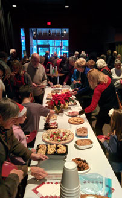

Earlier Concerts
Broadway Spring 2024:
Gananoque Choral Society 2023 Christmas Concert:

Christmas 2023
Music Director: Paul Harding
Spring 2023

>

Christmas 2015
A full house of pre-Christmas revellers enjoyed the Society's November 29th Concert at the Firehall Theatre.
The concert, "Christmas Around the World", featured carols and Christmas songs from England, Germany, Wales, Ukraine, Israel (!), and even a few from Canada. The finale was a Canadian rendition of the "Twelve Days of Christmas", re-named to "A Porcupine in a Pine Tree".
Aside from being delighted by the performance, the audience was treated to a mouth-watering assortment of Christmas treats. A great way to start the holiday season!
2014 Christmas Concert
Attending the Choral Society’s Christmas concert is a great start to the season!
Thirty members of the Society, accompanied by pianist Caroline Dowling, and directed by Anna Russell, entertained a full house at the Firehall Theatre.
They presented many of our favourite carols such as “White Christmas”, “Silent Night”, and “O Come All Ye Faithful”, and performed a number of popular melodies including “Hallelujah” and Stan Rogers’ ”Northwest Passage”. We audience members were encouraged to sing along a few times; fortunately they provided the words to the songs! Of course, humour was abundant, highlighted by the tune “The Twelve Days AFTER Christmas”. And who knew that Bach had twenty children?Gananoque Choral Society is grateful for the support of local business, including Linda’s TPI Clothing Boutique, Gan Shoe Outlet, Pharmasave, Moroni’s Ristorante, Sears, Corner Stone Hairstylists, Spanish Villa Hairstylists, This That & Everything, Donevan’s Country Market, Woodley’s Jeweller’s, Dano’s Pizza and Pita, Your Dollar Store With More, Computer Works, and Claudine Kirkby.THANK YOU!!
The traditional after-concert goodies are always a hit
2014 Spring Concert
The Society performed two concerts this spring, one on Saturday evening at Gananoque Secondary School, and the other at Lansdowne United Church on a cold rainy Sunday afternoon in early May.
It warmed up in a hurry inside the church, though, as the singers had the audience clapping, tapping their feet and cheering, starting with the first song of their 20 song program themed "Troubles by the Score". Favourites such as "Mountain Music", "Country Roads", "Sixteen Tons", "Four Strong Winds", and Stompin' Tom's "Hockey Song". Most of the performances were presented in the choral tradition, interspersed with solos and duets by Choral Society members.
The complimentary snacks after the concert are always a hit!
2013 Christmas Concert
The Gananoque Choral Society presented "our Christmas Gift to You, at the Firehall Theater in Gananoque on Sunday December 1st. The program included old favourites as well as not-so-well known tunes to the entertainment and joy of the multiple generations of families
An encore performance was held at the Carveth Lodge, where it was rumoured that there was a successful marriage proposal!
A yummy selection of Christmas treats is always served after every concert.
Spring 2013 Performances
During the spring the Gananoque Choral Society presented their unique and special interpretation of the history of rock and roll! After two very popular concerts the Society was invited to lead off the Special Concert & Fundraiser at St. John the Evangelist Catholic Church. They provided delightful renditions of popular rock and roll favourites.
Christmas 2012: A Musical Christmas Gift for You
The Choral Society delivered one of its best performances in years at their 2012 Christmas Concert, entitled A Musical Gift for You.
Thirty singers, directed by Anna Russell and accompanied by Paul Harding, sang twenty holiday season songs including First Nations and melodies enjoyed by other religions.
If you have enjoyed our concerts in the past, think how much more fun you’ll have singing with us. Remember, there are no tryouts and you don’t have to be able to read music. Rehearsals for the end of year program start early September. Keep posted for more updates.
Spring 2012: Celebrating 20 Years Singing for the Community
This year’s Spring Concert looks back in time to commemorate 20 years of sharing our joy of singing with the local communities. The program includes many of our favorite songs.
As usual, desserts and coffee are provided free of charge after the event.
2011: We Wish You A Merry Christmas
On Sunday, November 27 @ 2:30 pm at Grace United Church, Gananoque we presented our "Family Advent Concert", a collection of population Christmas tunes and carols to kick off the season. We performed some of our favourite holiday songs, presented a few from around the world, and lead a sing along that was enjoyed by all!
2011 Canadian Classics, Gananoque and Lansdowne
The Gananoque Choral Society produced a festive and traditional spring program on Saturday, May 7 in Gananoque at the Firehouse Hall and Sunday, May 8 in Lansdowne at the United Church. Exciting renditions included Canadian folk songs made popular by celebrities such as Anne Murray and KD Lang. Popular ballads such as “The Mira”, The Roll of the Sea” and "Alberta Bound" were greatly enjoyed by the audience. And as a tribute to our friends in the lower 48, the group beautifully sang “Bridge Over Troubled Water”, newly composed in the choral manner by our director, Paul Arnold. Simon and Garfunkel would be proud!
As usual, desserts and coffee were provided free of charge after the event.